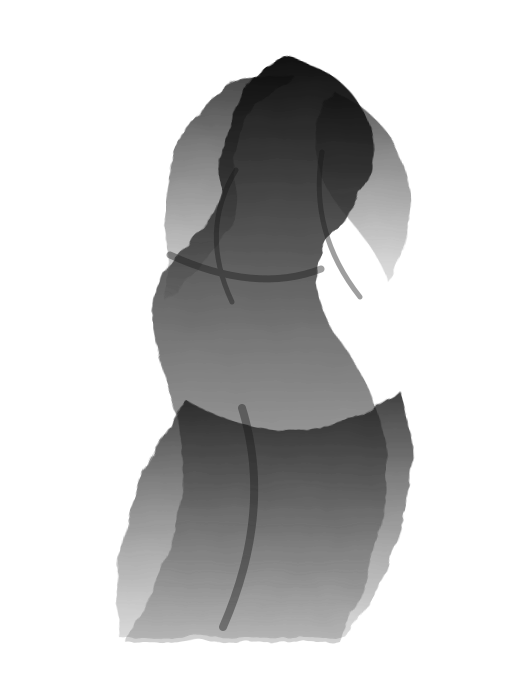

Singer Streamer / VTuber
Sumino Shizuku
静けさの中に、想いをのせて。あなたの心に、そっと寄り添う歌を。

雑談 / Chat Stream
歌枠 / Singing Stream
ゲーム配信 / Game Play
弾き語り / Acoustic
読み聞かせ / Reading Stream
Profile
墨乃しずくは、歌枠と読み聞かせを中心に活動する和の配信者です。静かな雑談、短い朗読、週末の歌枠を組み合わせ、初見でも入りやすい落ち着いた時間を届けています。
低めの声で届けるバラード中心のアーカイブ。初見向けの一曲目を固定しています。
短編、季節の手紙、ファン投稿をゆっくり読む月曜夜のシリーズ。
和風作品のナレーション、短尺歌唱、配信内タイアップの相談を受け付けています。